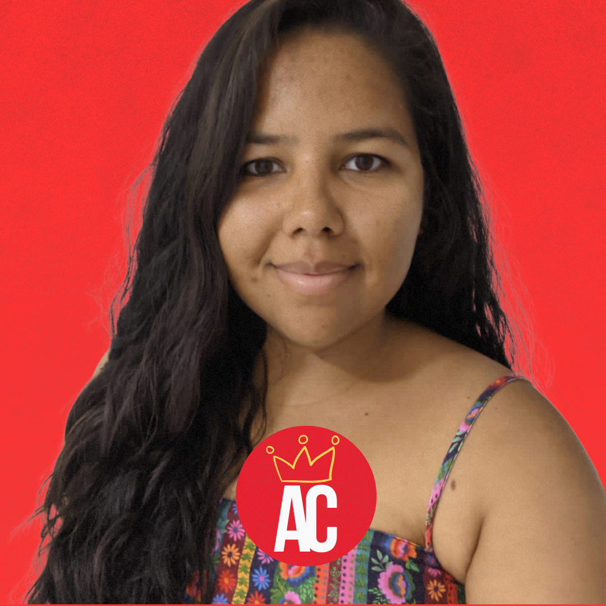

ANTROCAST

episódio 01
A pessoa além da Doença: a desmedicalização dos corpos.
Neste podcast, exploramos uma perspectiva transformadora sobre a relação entre o corpo e a doença. Em vez de enxergar a doença como algo que "habita" a pessoa, discutimos como ela é um estado que afeta, mas não define o indivíduo. Através de uma entrevista, abordaremos o impacto emocional, social e sociológico dessa visão, incentivando uma compreensão mais humana e integrativa da saúde e do adoecimento.